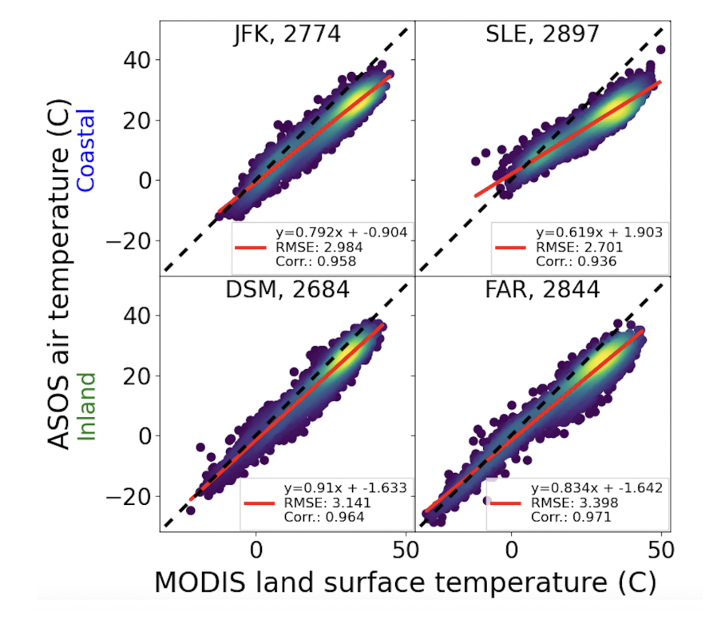
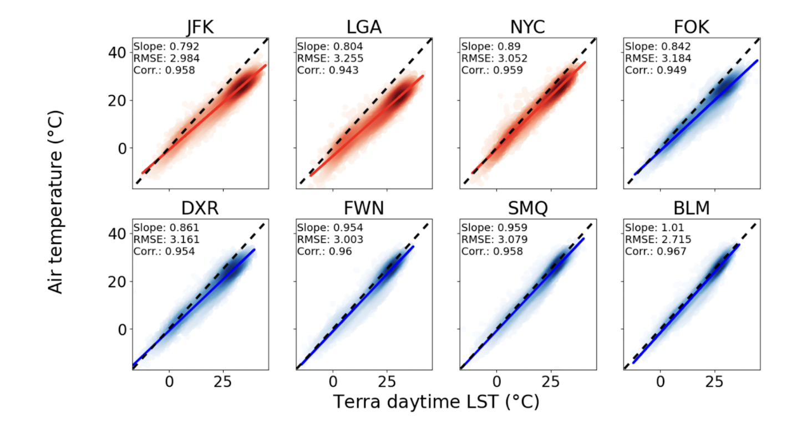
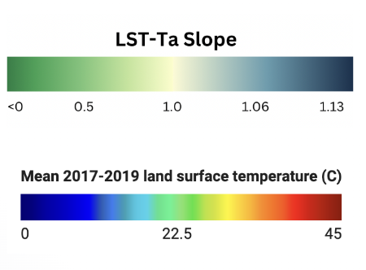
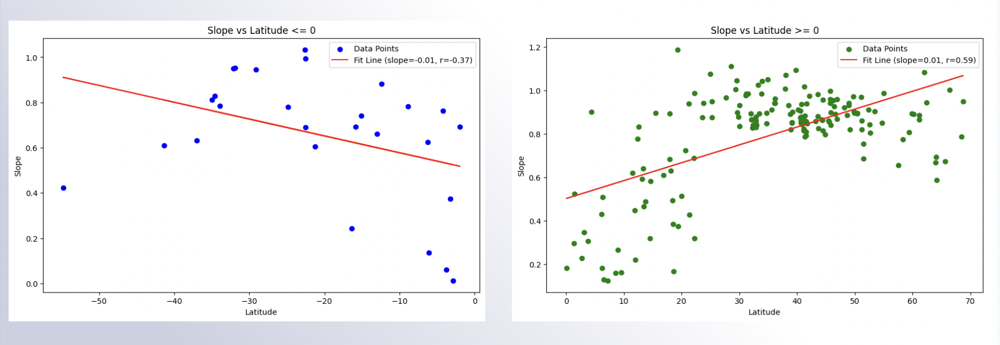

Background
The relationship between air temperature (Ta) and Land Surface Temperatures (LST) varies in urban areas, especially with controlling variables affecting their interaction. A literature review by the Science of the Total Environment crowdsourced air temperatures in Sydney, Australia, and observed their differences with LSTs in the area. The study found that this relationship differs by season, ecological infrastructure, and building morphology and that the LST varies more than air temperatures in warmer seasons (Naserikia et al). There is a greater difference in LST and Air Temperature in warmer days and there are stronger LST-Ta relationships in areas with mostly dense and scattered trees. In the summer, areas with higher building density (and more pronounced heat vulnerability) show insignificant or negative relationships between LST- Ta in summer (Naserikia et al).
Data
We began by plotting one-to-one plots with existing LST and Ta data to understand the nature of their relationship in specifically NYC and surrounding regions.
In this figure, we see the Coastal and Inland areas plotted. The LST and Ta relationship is seen as positively correlated. With the line of best fit, we see the different slopes of these relationships alongside the Root Mean Squared Error (RMSE) and a high positive correlation.
This eight-panel plot compares NYC local airports with surrounding stations’ LST. Red represents NYC stations and blue represents the surrounding rural areas as represented by Figure 3’s map of the stations. Similarly to Figure 2, the LST and Ta relationship is seen as positively correlated. With the line of best fit, we see the different slopes of these LST and Ta relationships alongside the Root Mean Squared Error (RMSE) and a high positive correlation (>0.9).
MODIS and ASOS Satellite Data
The basemap is the Land Surface Temperature (LST) from the years 2017-2019. Cooler temperatures are represented by blue and hotter temperatures are represented by red:

The slope legend below shows the LST-Ta relationship. Lower slopes are dark green and as slope increases, the legend color turns into a lighter green and as the slope increases, the symbol turns purple:

In the ASOS stations, which are represented by circles, lower slopes tend to have a mid-range LST, which is green.
In the NYC area, which are represented by squares, lower slopes tend to have a higher LST; higher slopes tend to be in locations with a cooler LST.
The map below depicts the slopes of the LST-Ta relationship where surrounding stations are represented by circles and uHMT data is presented with squares, and can be more clearly seen in the bottom right of Figure 5 where the NYC area is enhanced and enlarged. As we see, the slopes are higher in the surrounding NYC regions rather than at uHMT stations:
LST-Ta Slope Map
We then looked at the LST-Ta relationship in a more global scale to understand how UHIs are effected by several factors. There are over 200 ASOS Stations around the world!
Legends for the Map Below:
The slope map below shows the relationship between LST and Ta. You can type in the search bar in the map below to find a specific station/location's LST-Ta relationship.
In this map,
We also found a common trend across seasons and satellites where globally, latitudes and regions near the equator have a lower slope when it comes to their LST-Ta relationships. In comparison, regions in other sectors of the world vary more based on other factors. To see this difference more, we plotted the latitude and LST-Ta relationship in a linear regression plot:
By visualizing our data using this plot, we can now understand how global regions differ in their LST-Ta relationship.
For example, in the graph on the right, before 30 degrees latitudet, we see a strong latitude effect. In regions above 30 degrees latitude (which are mainly tropical areas), the slope of the regression line seems to be pretty flat.
There are many more factors that may contribute to differences in slopes around the globe, and further research will help look at potential explanations for these maps.